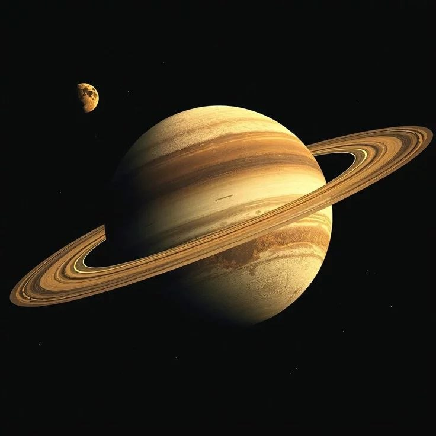

Saturn is best known for its spectacular ring system made of ice, rock, and dust particles. It is a gas giant like Jupiter and is composed mainly of hydrogen and helium. Saturn is so light for its size that it would theoretically float in water if a large enough ocean existed. The planet has many fascinating moons, including Titan, which has a thick atmosphere and lakes of liquid methane. Its beautiful rings make Saturn one of the most recognizable planets.